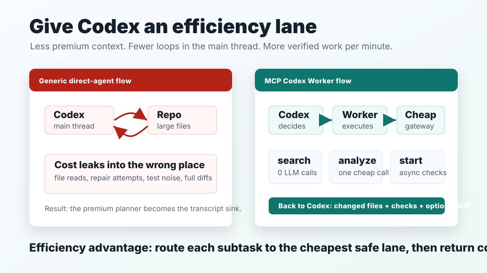

Without Worker
Codex reads large files, watches repair loops, ingests full diffs, and burns premium context on repetitive implementation work.
Stop feeding Codex giant diffs. Delegate expensive code-reading and repair loops to a cheaper async worker, then return only compact, verified results.

Codex reads large files, watches repair loops, ingests full diffs, and burns premium context on repetitive implementation work.
Codex sends one compact task. The worker reads, edits, tests, and returns evidence that Codex can review quickly.
Codex sees evidence, not every intermediate file read and patch attempt.
The local adapter translates Claude Code traffic to OpenAI-compatible gateways.
Scoped patch checks, test commands, deterministic assessment, and bounded auto-revise keep results auditable.
npm install
npm run build
npm run test
npm run smokeMove repository exploration out of the premium orchestration context.
Let the worker patch and run checks while Codex keeps the decision surface small.
Use the lite analyze tool when a full Claude Code loop would be overkill.
Use search for bounded repo discovery before spending any model tokens.